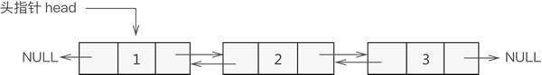
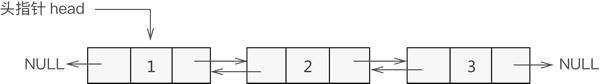

双向链表基本操作（C语言实现）
前面学习了如何创建一个双向链表，本节学习有关双向链表的一些基本操作，即如何在双向链表中添加、删除、查找或更改数据元素。
本节知识基于已熟练掌握双向链表创建过程的基础上，我们继续上节所创建的双向链表来学习本节内容，创建好的双向链表如图 1 所示：

图 1 双向链表示意图
换句话说，假设新元素节点为 temp，表头节点为 head，则需要做以下 2 步操作即可：
例如，将新元素 7 添加至双链表的表头，则实现过程如图 2 所示：

图 2 添加元素至双向链表的表头

图 3 双向链表中间位置添加数据元素

图 4 双向链表尾部添加数据元素
因此，我们可以试着编写双向链表添加数据的 C 语言代码，参考代码如下：
例如，从图 1 基础上删除元素 2 的操作过程如图 5 所示：

图 5 双链表删除元素操作示意图
双向链表删除节点的 C 语言实现代码如下：
C 语言实现代码为：
实现此操作的 C 语言实现代码如下：
本节知识基于已熟练掌握双向链表创建过程的基础上，我们继续上节所创建的双向链表来学习本节内容，创建好的双向链表如图 1 所示：

图 1 双向链表示意图
双向链表添加节点
根据数据添加到双向链表中的位置不同，可细分为以下 3 种情况：添加至表头
将新数据元素添加到表头，只需要将该元素与表头元素建立双层逻辑关系即可。换句话说，假设新元素节点为 temp，表头节点为 head，则需要做以下 2 步操作即可：
- temp->next=head; head->prior=temp;
- 将 head 移至 temp，重新指向新的表头；
例如，将新元素 7 添加至双链表的表头，则实现过程如图 2 所示：
图 2 添加元素至双向链表的表头
添加至表的中间位置
同单链表添加数据类似，双向链表中间位置添加数据需要经过以下 2 个步骤，如图 3 所示：- 新节点先与其直接后继节点建立双层逻辑关系；
- 新节点的直接前驱节点与之建立双层逻辑关系；
图 3 双向链表中间位置添加数据元素
添加至表尾
与添加到表头是一个道理，实现过程如下（如图 4 所示）：- 找到双链表中最后一个节点；
- 让新节点与最后一个节点进行双层逻辑关系；
图 4 双向链表尾部添加数据元素
因此，我们可以试着编写双向链表添加数据的 C 语言代码，参考代码如下：
line * insertLine(line * head,int data,int add){
//新建数据域为data的结点
line * temp=(line*)malloc(sizeof(line));
temp->data=data;
temp->prior=NULL;
temp->next=NULL;
//插入到链表头，要特殊考虑
if (add==1) {
temp->next=head;
head->prior=temp;
head=temp;
}else{
line * body=head;
//找到要插入位置的前一个结点
for (int i=1; i<add-1; i++) {
body=body->next;
}
//判断条件为真，说明插入位置为链表尾
if (body->next==NULL) {
body->next=temp;
temp->prior=body;
}else{
body->next->prior=temp;
temp->next=body->next;
body->next=temp;
temp->prior=body;
}
}
return head;
}
双向链表删除节点
双链表删除结点时，只需遍历链表找到要删除的结点，然后将该节点从表中摘除即可。例如，从图 1 基础上删除元素 2 的操作过程如图 5 所示：
图 5 双链表删除元素操作示意图
双向链表删除节点的 C 语言实现代码如下：
//删除结点的函数，data为要删除结点的数据域的值
line * delLine(line * head,int data){
line * temp=head;
//遍历链表
while (temp) {
//判断当前结点中数据域和data是否相等，若相等，摘除该结点
if (temp->data==data) {
temp->prior->next=temp->next;
temp->next->prior=temp->prior;
free(temp);
return head;
}
temp=temp->next;
}
printf("链表中无该数据元素");
return head;
}
双向链表查找节点
通常，双向链表同单链表一样，都仅有一个头指针。因此，双链表查找指定元素的实现同单链表类似，都是从表头依次遍历表中元素。C 语言实现代码为：
//head为原双链表，elem表示被查找元素
int selectElem(line * head,int elem){
//新建一个指针t，初始化为头指针 head
line * t=head;
int i=1;
while (t) {
if (t->data==elem) {
return i;
}
i++;
t=t->next;
}
//程序执行至此处，表示查找失败
return -1;
}
双向链表更改节点
更改双链表中指定结点数据域的操作是在查找的基础上完成的。实现过程是：通过遍历找到存储有该数据元素的结点，直接更改其数据域即可。实现此操作的 C 语言实现代码如下：
//更新函数，其中，add 表示更改结点在双链表中的位置，newElem 为新数据的值
line *amendElem(line * p,int add,int newElem){
line * temp=p;
//遍历到被删除结点
for (int i=1; i<add; i++) {
temp=temp->next;
}
temp->data=newElem;
return p;
}
总结
这里给出双链表中对数据进行 "增删查改" 操作的完整实现代码：
#include <stdio.h>
#include <stdlib.h>
typedef struct line{
struct line * prior;
int data;
struct line * next;
}line;
//双链表的创建
line* initLine(line * head);
//双链表插入元素，add表示插入位置
line * insertLine(line * head,int data,int add);
//双链表删除指定元素
line * delLine(line * head,int data);
//双链表中查找指定元素
int selectElem(line * head,int elem);
//双链表中更改指定位置节点中存储的数据，add表示更改位置
line *amendElem(line * p,int add,int newElem);
//输出双链表的实现函数
void display(line * head);
int main() {
line * head=NULL;
//创建双链表
head=initLine(head);
display(head);
//在表中第 3 的位置插入元素 7
head=insertLine(head, 7, 3);
display(head);
//表中删除元素 2
head=delLine(head, 2);
display(head);
printf("元素 3 的位置是：%d\n",selectElem(head,3));
//表中第 3 个节点中的数据改为存储 6
head = amendElem(head,3,6);
display(head);
return 0;
}
line* initLine(line * head){
head=(line*)malloc(sizeof(line));
head->prior=NULL;
head->next=NULL;
head->data=1;
line * list=head;
for (int i=2; i<=5; i++) {
line * body=(line*)malloc(sizeof(line));
body->prior=NULL;
body->next=NULL;
body->data=i;
list->next=body;
body->prior=list;
list=list->next;
}
return head;
}
line * insertLine(line * head,int data,int add){
//新建数据域为data的结点
line * temp=(line*)malloc(sizeof(line));
temp->data=data;
temp->prior=NULL;
temp->next=NULL;
//插入到链表头，要特殊考虑
if (add==1) {
temp->next=head;
head->prior=temp;
head=temp;
}else{
line * body=head;
//找到要插入位置的前一个结点
for (int i=1; i<add-1; i++) {
body=body->next;
}
//判断条件为真，说明插入位置为链表尾
if (body->next==NULL) {
body->next=temp;
temp->prior=body;
}else{
body->next->prior=temp;
temp->next=body->next;
body->next=temp;
temp->prior=body;
}
}
return head;
}
line * delLine(line * head,int data){
line * temp=head;
//遍历链表
while (temp) {
//判断当前结点中数据域和data是否相等，若相等，摘除该结点
if (temp->data==data) {
temp->prior->next=temp->next;
temp->next->prior=temp->prior;
free(temp);
return head;
}
temp=temp->next;
}
printf("链表中无该数据元素");
return head;
}
//head为原双链表，elem表示被查找元素
int selectElem(line * head,int elem){
//新建一个指针t，初始化为头指针 head
line * t=head;
int i=1;
while (t) {
if (t->data==elem) {
return i;
}
i++;
t=t->next;
}
//程序执行至此处，表示查找失败
return -1;
}
//更新函数，其中，add 表示更改结点在双链表中的位置，newElem 为新数据的值
line *amendElem(line * p,int add,int newElem){
line * temp=p;
//遍历到被删除结点
for (int i=1; i<add; i++) {
temp=temp->next;
}
temp->data=newElem;
return p;
}
//输出链表的功能函数
void display(line * head){
line * temp=head;
while (temp) {
if (temp->next==NULL) {
printf("%d\n",temp->data);
}else{
printf("%d->",temp->data);
}
temp=temp->next;
}
}
程序执行结果为：
1->2->3->4->5
1->2->7->3->4->5
1->7->3->4->5
元素 3 的位置是：3
1->7->6->4->5
关注公众号「站长严长生」，在手机上阅读所有教程，随时随地都能学习。内含一款搜索神器，免费下载全网书籍和视频。

微信扫码关注公众号